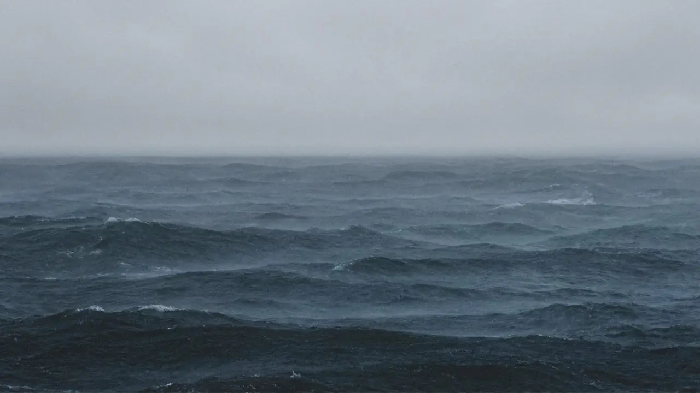

Essay · 2026 · 6 min read
"No man ever steps in the same river twice."
— Heraclitus
A note written on the morning of an exam I sat three years ago — on the day that was meant to decide everything, what it actually decided, and the quiet mercy of standing downstream from it now.
This morning the city is quiet in a particular way. There is a hush that arrives only on this date — certain roads kept clear, certain parents standing at certain gates, a whole country holding its breath for the people inside the rooms. Three years ago, on a morning shaped exactly like this one, I was one of the people inside the room, holding a pen.
Heraclitus said you cannot step into the same river twice. I had always read it as a line about water. This morning I read it as a line about exam halls. The room is still there. The date comes back every year, on schedule, like a tide. But the boy who walked in three years ago and the person reading the news today are not the same person — and that, it turns out, is the whole point.
The day that was meant to decide everything
We were told, in a hundred quiet and not-so-quiet ways, that this was the day. The hinge of a life. The single door through which all the rest of it would have to pass. I believed it completely. For a year I lived as though my whole future had been folded down into a few hours and a few sheets of paper, and that if I creased them wrong, the fold would never come out.
Three years downstream, I can say a thing I could not have heard back then: it decided less than it promised, and more than I noticed. It decided a city, a set of buildings, a few years of who would sit beside me. Those are not small things. But it did not decide who I would become, or what I would come to care about, or whether I would be the kind of person worth sitting beside. None of that was on the paper. None of it came with an answer key.
The last exam with an answer key
Here is the thing nobody tells you in the room: it is the last time the questions will arrive with the answers printed in the back. Everything afterward — what to study, whom to trust, when to leave, what to do with a quiet Sunday and a whole undecided life — comes ungraded. There is no marker. There is no curve. You find out whether you chose well only by living long enough to see.
I used to find that frightening. I am beginning to find it kind. A life with an answer key would not be a life; it would be a worksheet. The terror of the open question is also its dignity — that it was left open for me, in particular, to answer with the only thing I have, which is the way I spend my days.
To the one holding the pen
If I could send a single line back across the three years, into that bright, terrified, over-prepared morning, it would not be a tip or a score. It would be this: you are not being measured for the last time. You are being measured for nearly the first. The river you are so afraid of is shallower than they told you, and longer than you can see, and it keeps moving whether you pass or not — which means there is no single morning you cannot, in time, get downstream of.
The exam ends at a fixed hour. The river does not. Three years on, that is the most generous fact I know.
Three years is not a long time, and it is the only kind of time there is. It went the way all of it goes — not in a rush but in a drift, a thousand ordinary mornings that never once announced themselves as the stuff a life is made of, and were. I looked up one day and the terrified boy in the exam hall had become a stranger I am fond of. I will look up again, and this morning too will be the far bank — small, and bright, and a whole river away.
The room is the same. The date is the same.
I am not — and I have never been more grateful for a difference.